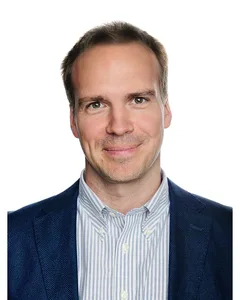

01
Academic rigour
Evidence before opinion. Our work draws on research in marketing and economics, and on years of teaching executives who push back hard on weak arguments.
About
GS&Partners is an executive advisory and learning firm founded by Giuseppe Stigliano. We work with boards, executive teams, and global organisations.
The premise
We help business leaders decode disruption, challenge established assumptions, and make better strategic choices.
Through advisory, executive education, and exposure to new perspectives, we help leaders identify opportunities, make informed choices, and turn them into competitive advantages their organisations can sustain.
Most firms arrive with a framework and look for a place to apply it. We start from the decision in front of you — what it depends on, what it rules out, and what it would take to be wrong.
Vision
A world where businesses shape their future instead of being shaped by it.
Mission
To turn disruption into options leaders can act on, and options into advantages customers value and competitors struggle to replicate.
Our approach
01
Evidence before opinion. Our work draws on research in marketing and economics, and on years of teaching executives who push back hard on weak arguments.
02
We have carried the budget, the board meeting, and the consequences — so our recommendations account for what it actually takes to execute them.
03
Patterns that look inevitable inside one sector usually have a counter-example in another. We bring that counter-example into the room.
The partners
Founding Partner
Marketer, three-time CEO of international companies and keynote speaker on five continents. Co-author with Philip Kotler of Retail 4.0 and Redefining Retail, recognised by Thinkers50, and teacher of strategy at UCL.
For two decades he has worked with the executive teams of global brands on strategy, customer experience and transformation.
The future is not artificially intelligent. It is intelligently artificial.

Partner & CEO
Leads strategy and execution, and runs every engagement from design to delivery.
Partner, Events & Operations
Makes every in-person moment and every client experience run seamlessly.
Headshot to come
Giuseppe Stigliano — track record
How we staff the work
We are three partners, and every client works with us directly. Where a project calls for depth we do not have in-house, we bring in faculty from leading business schools and operators from the relevant industry — named to you in advance, not substituted in quietly once the work has been sold.
Contact
A few lines is enough. We reply within two working days.